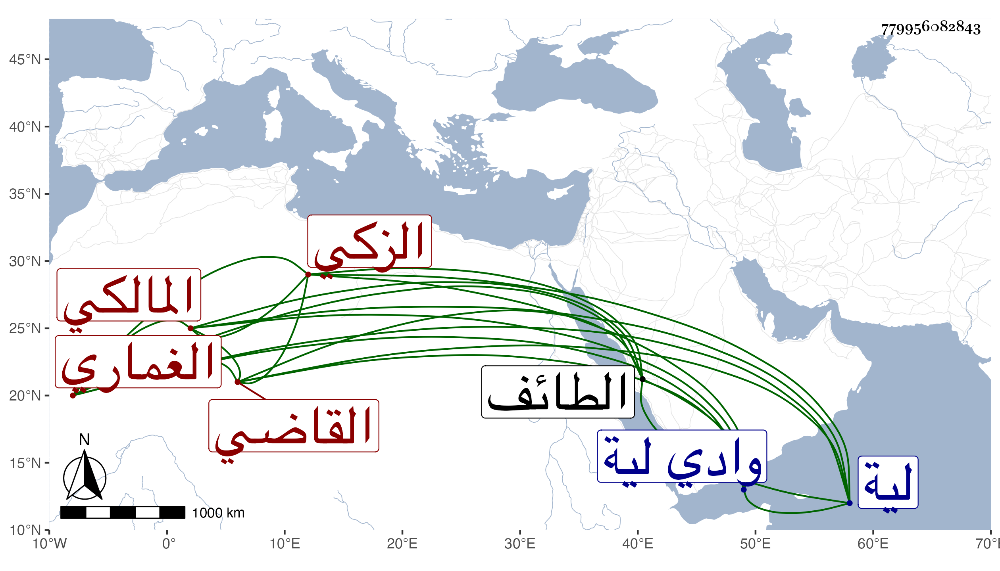

0902Sakhawi.DawLamic.ITO20230111-ara1.EIS1600.779956082843
Biography ID: 779956082843
314
أبو الخير بن محمد بن عبد الله بن يعقوب بن إبراهيم بن محمد الزكي الغماري المالكي القاضي أخو الجمال محمد الماضي . ولد سنة تسع وتسعين وسبعمائة في قرية الشارع من وادي لية بكسر اللام وتشديد التحتانية من أعمال الطائف ونشأ بها فحفظ القرآن وتلاه لورش على خالد المغربي والرسالة لابن أبي زيد وولي قضاء لية بعد أخيه ولازم الحج في غالب السنين وزار النبي صلى الله عليه وسلم ولقيه البقاعي في صفر سنة تسع وأربعين بأرض تدعى اليسرى من أرض الشارع فقرأ عليه حديثا من البخاري بإجازته من ابن سلامة وأجاز له من في الجمال محمد بن أحمد بن عيسى بن مكينة ونقل عنه وعن غيره أنه سيء السيرة في قضائه وشهادته وغير ذلك من أحواله مات .
